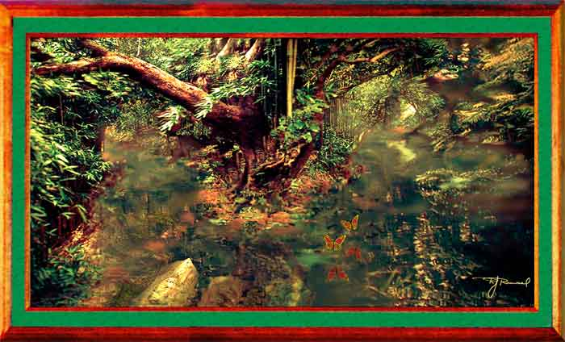

| Butterflies. Paintage. About a dozen photos went into this paintage, particularly ones I took along hiking trials on Kauai, Hawaii. There are even some rocks I photographed in Korea. The swamp water and butterflies are entirely imaginary, however. |
Last painting. Go to Gallery 2, or Gallery 3.
Return to Gallery 1
Home